第一章 功能介绍
AKAI PROFESSIONAL · AC50 零基础 · 图文 + 视频
1认识机器
MAIN VOLUME · B1–B3 · 屏幕 · 电平表 · 喇叭
SAMPLE · SEQ · PAD FX · KNOB FX · SHIFT · PAD BANK · 推子 · ERASE · NOTE REPEAT
K1 · K2 · K3
CHOP · LOOP · SAMPLE SELECT · ENCODER · −/+ · SAMPLE RECORD · SEQ RECORD · PLAY · STOP · MUTE · 16 LEVELS · TAP TEMPO · 麦克风
PAD 1–16 × 8 组（Bank A–H）
接口在机器背面，见下面「开机 · 充电 · 接口」。
新概念 ① 采样：把一段声音录下来；录下来的那段声音，也叫采样。一声鼓、一句人声、唱片里的两小节，都可以是一个采样。
新概念 ② 采样器：能录声音、把声音放到垫上、一敲就响的乐器。敲垫有力度：轻敲声小、重敲声大。电池、喇叭、麦克风都在机器里，不接电脑也能用。
用 MPC 做 beat，永远是这四步：
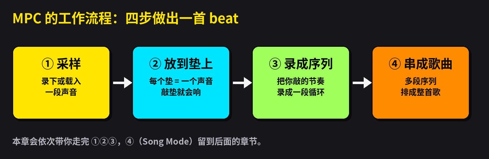
新概念 ③ 工程（Project）：你做的一切（声音 + 节奏 + 设置）打包在一起，叫一个工程，就像游戏存档。开机会自动载入一个示范工程（demo），里面已有鼓声和节奏，开机就能玩。
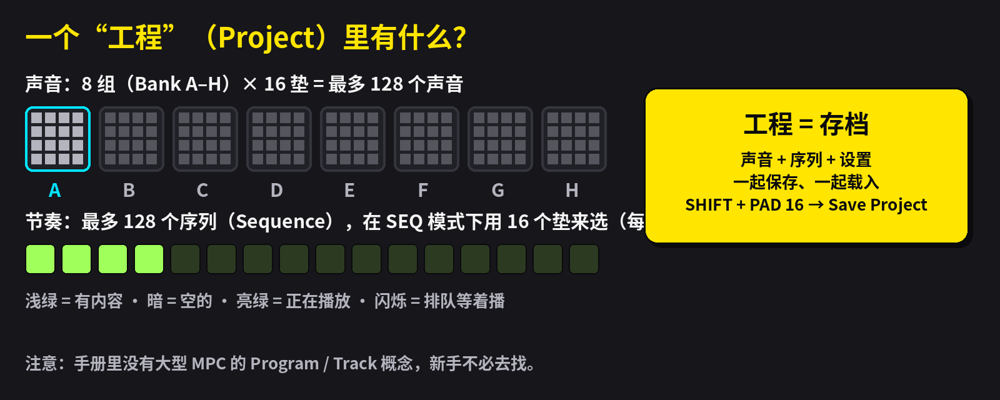
按键写法：SHIFT + PAD 16 = 先按住 SHIFT 再按 PAD 16；转 ENCODER = 转大旋钮，按 ENCODER = 把它按下去。
开机 · 充电 · 后面板接口
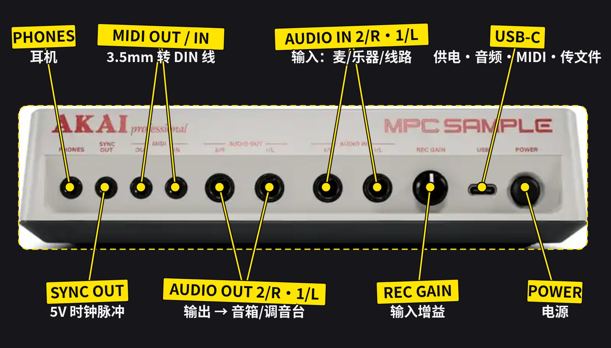
- POWER：开关机都按它。机器会后台自动保存，不怕关机丢东西。
- USB-C：充电（盒子里没有充电头，用自己的 USB-C 充电头或充电宝，5V 2A 以上）。电池图标颜色 = 剩余电量：绿 100–30% · 琥珀 29–15% · 红 14–5% · 红闪 = 不到 5%，马上充。开着机可能充不进，关机充最稳。
- PHONES：3.5 mm 耳机孔。插耳机后内置喇叭自动关闭，音量仍用顶面 MAIN VOLUME。
- microSD 卡槽在机身左侧面。
2区域详细介绍
🎬 原创短片：面板 5 区 + 按键后的屏幕（4 分钟，1080p）
A看与听：音量 · 屏幕 · 喇叭
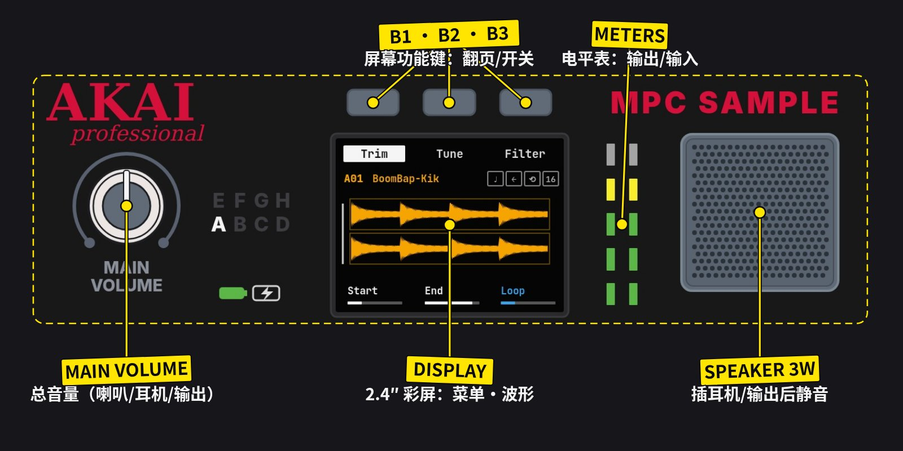
总音量：喇叭、耳机、AUDIO OUT 都归它管。
屏幕功能键：没有固定功能，屏幕最上面一排写什么，它们就做什么。
2.4″ 彩屏：看菜单和波形。第 3 部分逐页细讲。
看输出 / 输入电平高低。
3 W。插耳机或接了 AUDIO OUT 后自动静音。
B切模式 · SHIFT · 推子
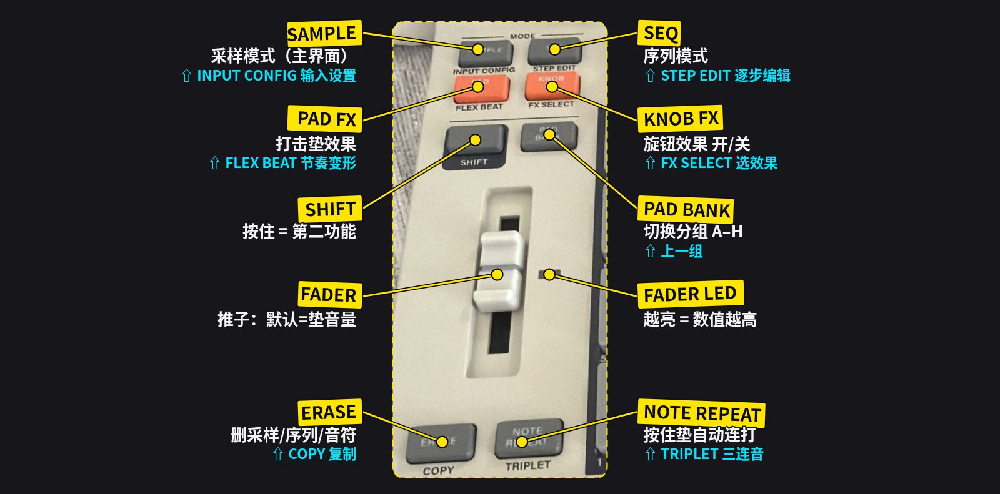
模式：同样 16 个垫，在不同模式下作用不同。亮着的键 = 当前模式。迷路就按 SAMPLE。
采样模式（主界面）：敲垫出声。⇧ INPUT CONFIG 输入设置
序列模式：垫 = 一段序列。⇧ STEP EDIT 逐步编辑
打击垫效果。⇧ FLEX BEAT 节奏变形
旋钮效果 开 / 关。⇧ FX SELECT 选效果
切换分组 A–H。⇧ 上一组
按住 = 第二功能。见下面黄框「按键基础」。
上下推的滑块，默认调当前垫音量；旁边 LED 越亮 = 数值越高。
删采样 / 序列 / 音符。⇧ COPY 复制
按住垫自动连打。⇧ TRIPLET 三连音
按键基础 · SHIFT 与第二功能
键和垫下方印的小字是第二功能：先按住 SHIFT，再按那个键，像电脑上 Shift + 数字打符号。按住 SHIFT 时，有第二功能的键亮红灯。
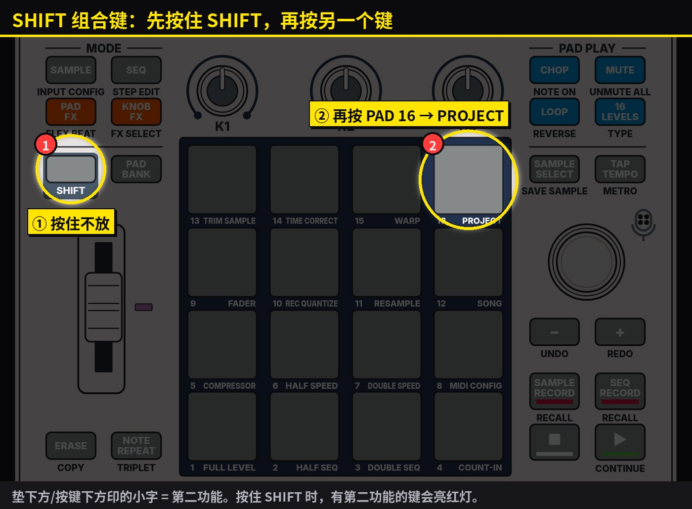
试一下：按住 SHIFT 再按 PAD 16 → 屏幕打开 Project 菜单。看一眼，按 SAMPLE 退出。顺序反了只是敲了一下垫——先按住 SHIFT。
| 组合 | 作用 | 用在 |
|---|---|---|
| SHIFT + PAD 4 | COUNT-IN 预备拍 开 / 关 | 录 beat |
| SHIFT + PAD 10 | REC QUANTIZE 录音量化 开 / 关 | 录 beat |
| SHIFT + PAD 13 | TRIM SAMPLE 永久剪掉首尾 | 采声音 |
| SHIFT + PAD 16 | PROJECT 工程菜单（载入 / 保存 / 新建） | 保存工程 |
| SHIFT + TAP TEMPO | METRO 节拍器 Off / On / Record | 录 beat |
| SHIFT + − / + | UNDO 撤销 / REDO 重做 | 随时 |
全部第二功能见 附录 · 功能速查。
C三个参数旋钮 K1–K3
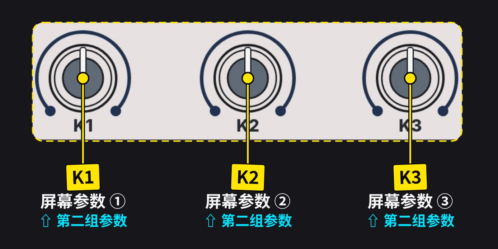
调屏幕最下面一排的第 1 个参数。⇧ 第二组参数
调屏幕最下面一排的第 2 个参数。⇧ 第二组参数
调屏幕最下面一排的第 3 个参数。⇧ 第二组参数
转了没反应？旋钮（和推子）是绝对位置的：换页后位置可能和数值对不上，参数名旁会出现箭头——朝箭头方向转，转到箭头消失就接管了。
D工具 · 浏览 · 录音 · 播放
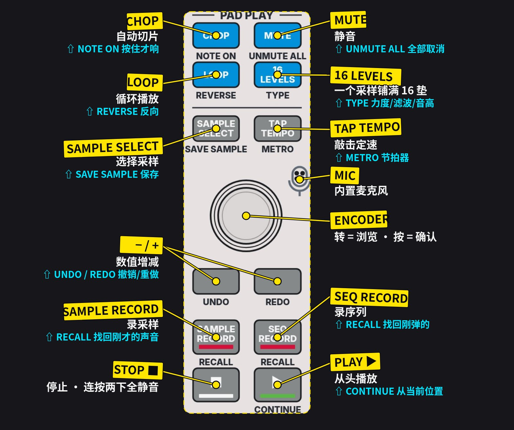
自动切片。⇧ NOTE ON 按住才响
静音。⇧ UNMUTE ALL 全部取消
循环播放。⇧ REVERSE 反向
一个采样铺满 16 垫。⇧ TYPE 力度 / 滤波 / 音高
打开采样浏览器，选声音。⇧ SAVE SAMPLE 保存采样
敲击定速。⇧ METRO 节拍器
内置麦克风（小孔）。
大旋钮：转 = 浏览 / 改值，按 = 确认。
数值减 / 加。⇧ UNDO 撤销 / REDO 重做
录采样。⇧ RECALL 找回刚才的声音
录序列。⇧ RECALL 找回刚弹的
从头播放。⇧ CONTINUE 从当前位置
停止；快速连按两下 = 停掉所有声音。
E16 个打击垫
中间 4×4 的方块。能感应力度（敲得重声音大）和按住后的压力。
按键基础 · 打击垫编号与 Bank
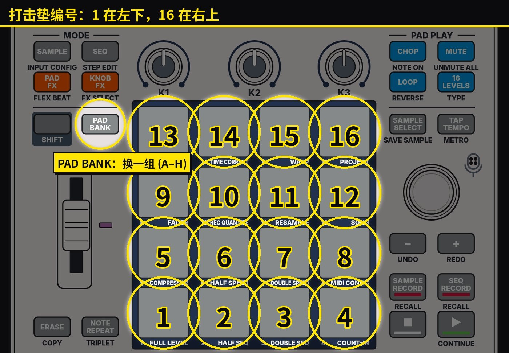
编号：PAD 1 在左下，往右 2、3、4，往上一行行到 13–16（PAD 16 在右上）。和电话键盘相反。
Bank（组）：一共 8 组（A–H），每组 16 个垫，最多 128 个声音。按 PAD BANK 换组：同样的垫，换一批声音。按住 PAD BANK 再按 PAD 1–8 可以直达某组；SHIFT + PAD BANK = 上一组。当前组显示在 MAIN VOLUME 旁边。
练一遍：按 SAMPLE → 从 PAD 1 敲到 PAD 16，轻、重各敲一次 → 按 PAD BANK 换组再敲。垫闪却没声 = 在 SEQ 模式，按 SAMPLE 回来；轻重一样响 = 开了 FULL LEVEL 满力度（SHIFT + PAD 1 关）。
找键游戏（1 分钟）：不看图，用手指依次点出（不用按）：MAIN VOLUME → SAMPLE → K2 → PLAY → PAD 1 → ENCODER → SHIFT。播放 / 录音在右下，模式在左上，很有规律。
3实时机器：看懂小屏幕

把你的 MPC Sample 开机、用 USB 线连上这台电脑，这张截图就会变成机器的实时画面：你在机器上切页、换采样，这里都会跟着变。读这一章时它会一直陪在这里。
- 当前页面
- —
- 选中采样
- —
- 状态栏
- —
屏幕只有 2.4 英寸，看法只有一条：最上面一排归 B1–B2–B3，最下面一排归 K1–K2–K3，位置一一对应。右下角小箭头 ⇧ = 按住 SHIFT 还有第二组参数。下面逐页看，先看主屏幕。
Sample 主屏幕（按 SAMPLE）
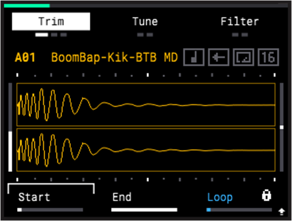
看屏幕上排，就摸上方 B1–B3；看屏幕下排，就转下方 K1–K3。
Sample 页的三组编辑页：Trim 管起止和循环，Tune 管音高，Filter 管滤波（声音的亮和暗）。白底 = 当前页。按 B1 / B2 / B3 切换；同键多按几次轮换下一组（B1：Trim → Mix → Amp Env，B2：Tune → Play，B3：Filter → Filt Env）。只换页，不改声音。
当前选中的垫编号 + 它上面的采样（A01 = A 组 1 号垫）。敲任意一个垫就切到那个垫，波形和下排参数跟着换。
采样的「形状图」：立体声是上下两条 = 左 / 右声道，竖线 = Start 位置。左边竖条 = 这个采样的音量，右边竖条 = 声像（偏左还是偏右）。垫被静音时波形变灰、敲了不响。
状态灯，亮 = 已打开：♩ Note On（按住才响）、← Reverse（倒着播）、循环图标 Loop、16 = 16 Levels。图标只显示状态，开关在各自的设置页（如 Note On、Reverse 在 B2 轮换到的 Play 页）。
K1 / K2 调采样的起点和终点，下面的细条是当前数值。按 ENCODER 在下排三个参数间切换（白框框住的 = 当前选中），转 ENCODER 或按 − / + 改值。敲垫只播 Start 到 End 之间这一段。
K3 调循环点；显示成蓝色 = 循环已打开。播放到循环点后回到 Start 继续，适合把一小段声音拉成持续的音色。
Chop 切片时（Sample 模式下按 CHOP）
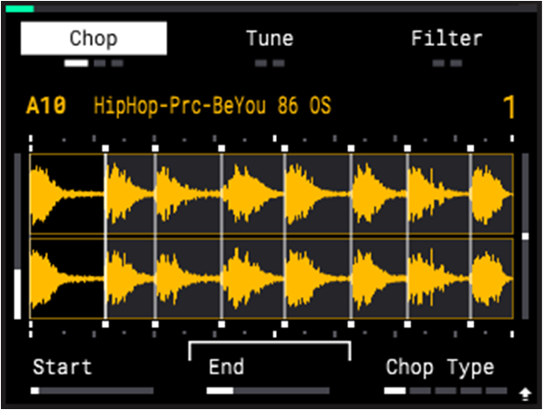
- Trim 变成 Chop = 正在切片；再按 CHOP 回到 Trim。
- 竖线 = 切点，每两条竖线之间是一片；切好后敲 PAD 5 就是第 5 片。
- 下排：K1 / K2 = 这一片的起点 / 终点，K3 = Chop Type 切法（Threshold 自动 · Regions 4/8/16 等分 · Manual 手动）。
- 切片编辑不能撤销，第三章细讲。
采样浏览器（按 SAMPLE SELECT）
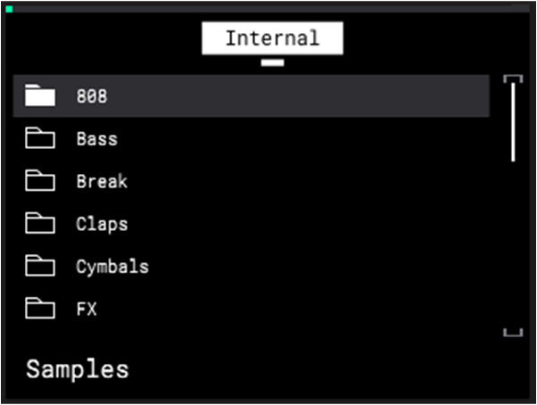
- 上排：B1 Back 回上一级 · B2 Internal 在内部存储和 microSD 卡之间切换 · B3 Preview 自动试听 开 / 关。
- 高亮行 = 当前选中的声音 / 文件夹。转 ENCODER 移动，按 ENCODER 打开文件夹或把声音载入到垫上。
- 底部一行 = 你在哪个文件夹；右侧滚动条 = 列表还有多长。
采样录音（按 SAMPLE RECORD）
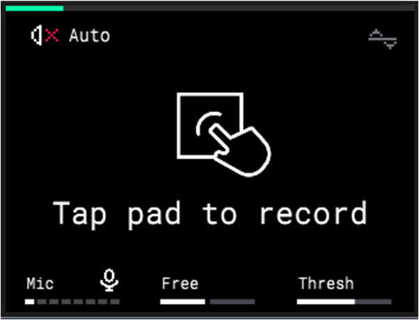
- Tap pad to record：敲一个垫就开录。
- 下排：K1 = 录音来源（先用 Mic）· K2 = 长度（Free 不限，Seq 和当前序列一样长）· K3 = 门槛 Thresh（声音大过它才自动开录）。
- 左上喇叭图标打叉 = 喇叭关了（用内置麦克风录音，或插着耳机 / 音箱线时）。右上波形图标在输入声音超过门槛时亮起。
- Auto（B1）：监听设置，Off / Auto / On 切换。
Seq 序列模式（按 SEQ）
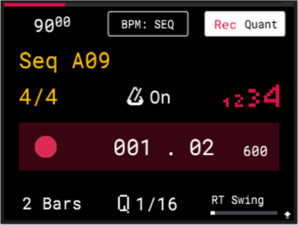
- 90.00 = 速度 BPM。按住 B1 + 转 ENCODER 修改；B2 = BPM 跟随方式（SEQ 每序列各自 · GBL 全局共用）；B3 = 录音量化 开 / 关。
- Seq A09 = 当前序列名；4/4 = 拍号（SHIFT + K2 改）。
- 节拍器图标 + On = 节拍器状态（SHIFT + TAP TEMPO 切 Off / On / Record）；1234 = 预备拍，红 = 开、灰 = 关（SHIFT + PAD 4）。
- 中间长条 = 播放位置（第几小节 . 第几拍）；播放时 ▶，录音时变红、● 亮。
- 下排：K1 = 序列长度（小节）· K2 = 量化 Q · K3 = RT Swing。按住 SHIFT：K1 = 任意长度 1–128 小节，K2 = 拍号，K3 = 节拍器音量。
Pad FX（按 PAD FX）
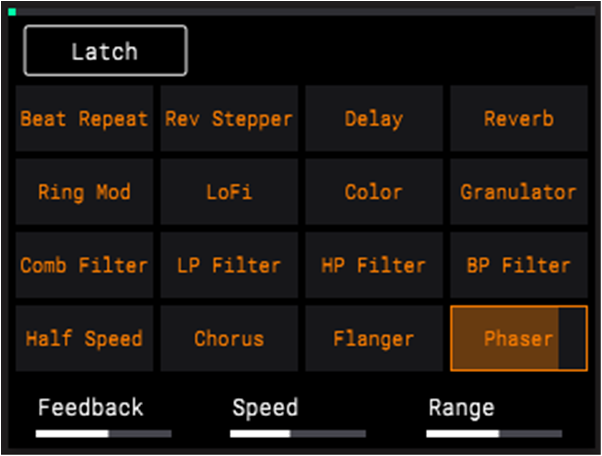
- 4×4 格子 = 16 个垫，位置一一对应。最上一排 = PAD 13–16（Beat Repeat、Rev Stepper、Delay、Reverb），最下一排 = PAD 1–4（Half Speed、Chorus、Flanger、Phaser）。
- Latch（B1）：把效果锁住，不用一直按着。
- 下排 = 当前效果的 3 个参数，K1–K3 调。
Knob FX（按 KNOB FX；选效果按 SHIFT + KNOB FX）
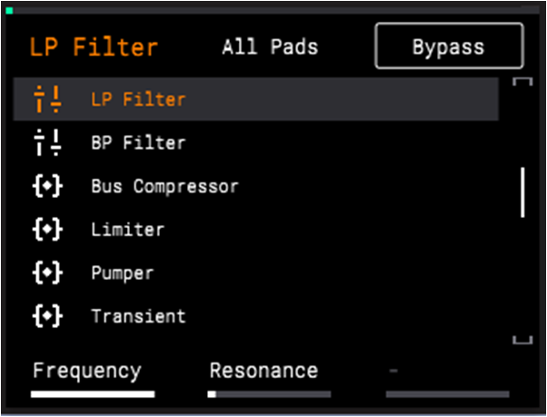
- KNOB FX 开着时：下排变成效果参数（橙色），K1–K3 专门调效果；左上角是当前效果名。
- 选效果：转 ENCODER 选，按 ENCODER 载入。B2 All Pads = 作用到所有垫，B3 Bypass = 旁通，暂时关掉效果。
- 在这一页敲垫，可以选哪些垫受影响（亮 = 受影响）。
Song 歌曲页（SHIFT + PAD 12）
把几段序列排成一首歌（本章不用，先认个脸）。
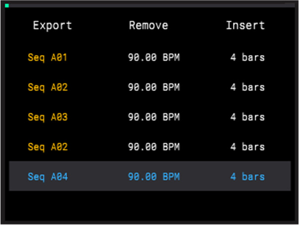
- 上排：B1 Export 导出（成音频或一个新序列）· B2 Remove 删掉高亮那一段 · B3 Insert 把你用垫选中的序列插进来。
- 列表 = 歌曲的播放顺序，每行 = 序列名 · 速度 · 小节数；高亮行 = 当前位置，转 ENCODER 移动。
Project 菜单与起名页（SHIFT + PAD 16）
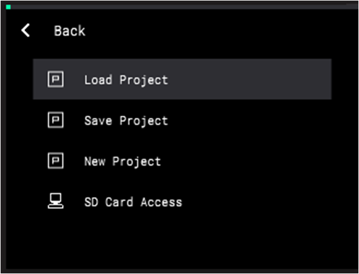
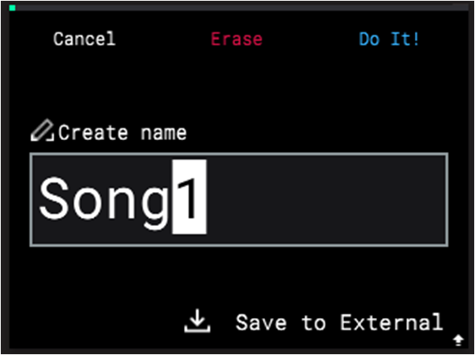
- 四个选项：Load Project 载入 · Save Project 保存 · New Project 新建 · SD Card Access 读卡。转 ENCODER 选，按下确认。
- 起名页：B1 Cancel 不保存退出 · B2 Erase 删字符（SHIFT + B2 全删）· B3 Do It! 确认。白块 = 正在输入的位置。
- 保存工程、保存采样、导出歌曲，都用这个起名页。
其他页面
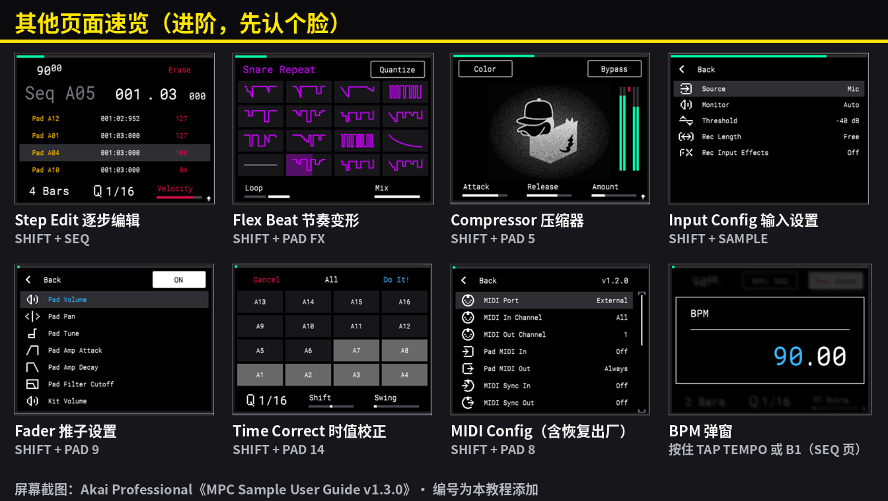
MPC Sample 没有叫 Settings 的总设置页，设置分在几个 SHIFT 菜单里：Input Config、Fader、Time Correct、MIDI Config（恢复出厂也在这里）。全部参数见 附录 R.8。
4第一次上手
先跟着两个流程做完两件大事，再用下面的卡片逐个练。每一步只做一次按键动作；接上机器时，固定的小屏幕会核对你在哪一步——状态对上了打 ✓，你再点「下一步」，不会自己往下跳；没连机器照图文走也行，「跳过这步」一直在。SHIFT 的第二功能不单开课：流程里用到的那一步顺手教。
播放 demo
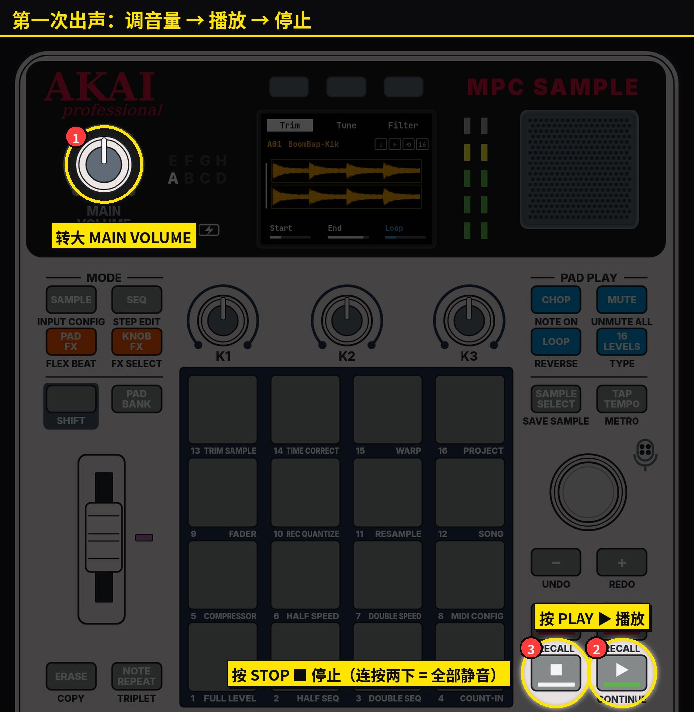
- 转大 MAIN VOLUME → 按 PLAY：demo 的 beat 循环播放，哪个声音响，哪个垫就亮一下。
- 按 STOP 停；快速连按两下 = 停掉所有声音。
- 边放边敲：SAMPLE → PLAY → 跟着节奏敲垫。只是现场弹，没有录下来（录音见「录第一段 beat」）。
没声音？看章末 FAQ。
换一个鼓声
选中的垫 = 最后敲的那个垫，很多操作都针对它。采样浏览器（SAMPLE SELECT）是内置声音仓库，几百个声音按文件夹分好。
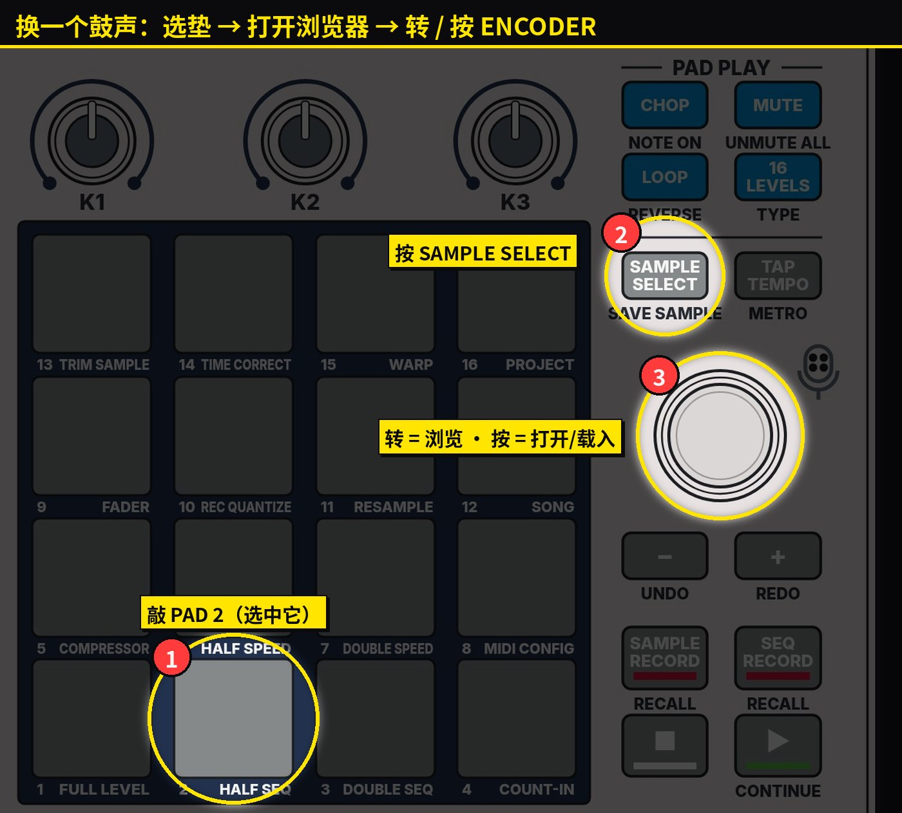
- SAMPLE 模式下敲 PAD 2，选中它。
- 按 SAMPLE SELECT，打开浏览器（画面见第 3 部分「采样浏览器」）。
- 转 ENCODER 到 Snares，按下去打开。
- 转 ENCODER 浏览，每个声音会自动试听；挑中了按 ENCODER，载入到 PAD 2。
- 再按 SAMPLE SELECT 回去，PLAY 听听变化。
听不到试听 → 按 B3（Preview）打开。进错文件夹 → B1 返回。换错了 → SHIFT + − 撤销。
认识序列：播放与切换
序列（Sequence）= 一段录好的节奏：哪个垫、什么时候、多大力度。通常 1–8 小节，循环播放；一首歌可以有好几段，一个工程最多 128 个。最常见每小节 4 拍：数「1、2、3、4」就是一小节。
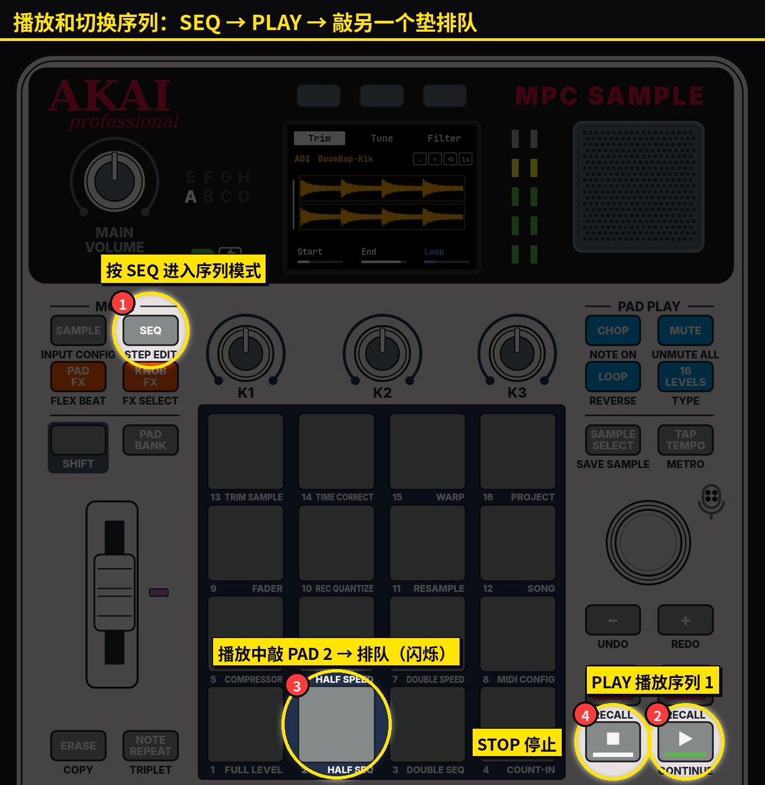
在 SEQ 模式下，一个垫 = 一个序列：浅绿 = 有内容 · 暗 = 空的 · 亮绿常亮 = 正在播放 · 闪烁 = 排队等着播。
- SEQ → PAD 1 选中时按 PLAY。
- 播放中敲 PAD 2：它先闪，这段放完后切过去、变常亮，屏幕上的序列名也变。
- 再试 PAD 3、PAD 4 → STOP。
敲了没马上切不是没反应——它在等这段放完。
录第一段 beat
- BPM（速度）：每分钟多少拍，越大越快。hip-hop 常在 80–95，house 约 120–128。
- 量化（Quantize）：手敲不会每下都准。打开录音量化，音会自动「吸」到最近的格子上；Q 值定格子粗细，1/16 = 每拍 4 格，最常用。
- 摇摆（Swing）：把每两个音的第二个往后推一点，节奏就「晃」起来。SEQ 页 K3 = RT Swing，只改播放手感，不移动录好的音。
- 节拍器（METRO）：「嗒、嗒」的提示音。SHIFT + TAP TEMPO 切 Off / On / Record（只在录音时响）。预备拍（Count-in） = 开录前先数 1 小节，SHIFT + PAD 4 开关，开着时 1234 图标变红。
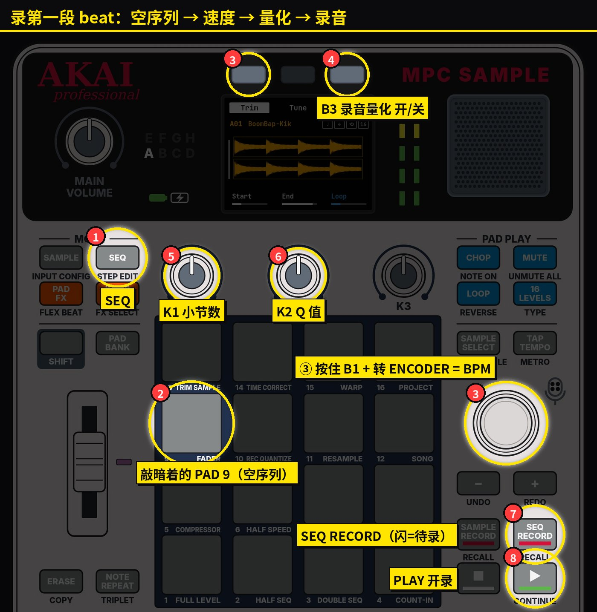
- SEQ，敲一个暗着的垫选空序列（demo 里可用 PAD 9）。
- 按住 B1 + 转 ENCODER，BPM 设到 90 左右，松开 B1。（改 BPM 也可以：按住 TAP TEMPO + 转 ENCODER，或均匀连敲 TAP TEMPO。）
- B3 打开录音量化（或 SHIFT + PAD 10）；K2 把 Q 设为 1/16；K1 把长度设为 2 小节。
- SHIFT + TAP TEMPO，节拍器设为 Record；要预备拍就 SHIFT + PAD 4。
- 按 SEQ RECORD：它闪烁（待录），垫自动变回「敲了出声」。
- PLAY 开录：第 1、3 拍敲底鼓，第 2、4 拍敲军鼓。
- 到结尾自动回到开头叠录，可以再加踩镲。
- 按 SEQ RECORD 停录（继续放），或 STOP 全停。停下后 PAD 9 变浅绿。
敲乱了 → SHIFT + − 撤销这次录的所有音。只删一个垫的音 → 录音时按住 ERASE 再按那个垫。没开录却弹得好 → SHIFT + SEQ RECORD（RECALL）找回上一圈。SHIFT + PAD 6（HALF SPEED）不改 BPM，只把音符间距拉大一倍。
采第一个声音
录音来源（Source）：「从哪录」——Mic 内置麦克风 · Rear 后面板 AUDIO IN · USB USB-C 设备 · Resample 机器自己的声音（把正在放的整段录成一个新采样，或 SHIFT + PAD 11 把当前序列录到选中的垫）。新手先用 Mic。更细的采样流程先走上面的「跟着做 · 采样」流程。
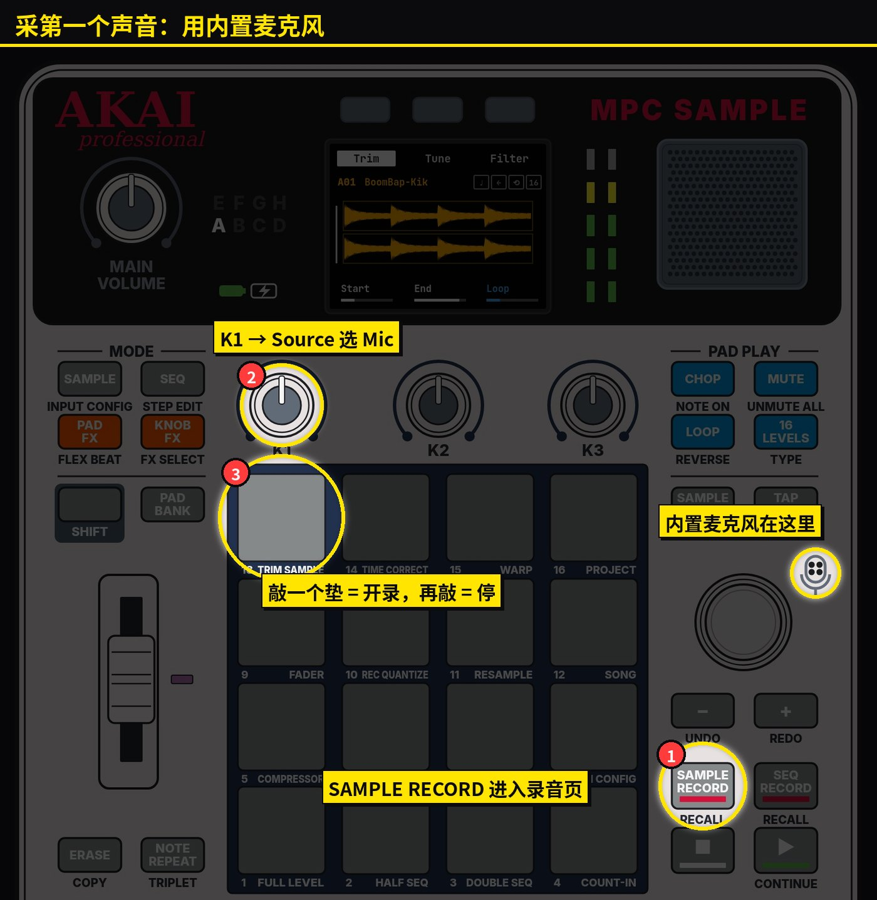
- 按 SAMPLE RECORD（屏幕各部分见第 3 部分「采样录音」）。
- K1 把来源选成 Mic；K2 保持 Free（不限长度）。
- 敲一个你愿意替换的垫——这一下就开始录。
- 对着麦克风拍手或说话。
- 再敲同一个垫停止（或 STOP；按 SAMPLE RECORD 则直接回采样模式）。
- SAMPLE，敲那个垫听听。
用内置麦克风时喇叭自动静音（防啸叫），想边录边听请插耳机。电平表一直红 = 太大声会失真，离远一点。好像没开录 → K3 门槛 Threshold 太高，调低。错过了好声音 → SHIFT + SAMPLE RECORD（RECALL）找回最近约 25 秒。替换了 demo 的声音 → demo 可以重新载入（见「保存工程」）。
修剪（Trim）：录音前后常有多余的安静或杂音。SAMPLE → 敲你的采样垫 → K1 调起点、K2 调终点（边调边敲）→ 满意后 SHIFT + PAD 13（TRIM SAMPLE）永久剪掉两头。按住 SHIFT 转 K1 / K2 可放大波形。下排不是 Start / End → 按 B1 切回 Trim。
单独存这个声音：SHIFT + SAMPLE SELECT（SAVE SAMPLE），起名同「保存工程」。
加第一个效果
效果（FX） = 实时改变声音的「滤镜」：回声 Delay、混响 Reverb、滤波 Filter、低保真 LoFi……先学两个引擎：PAD FX（按住垫生效）和 KNOB FX（用 K1–K3 控制一个效果）。
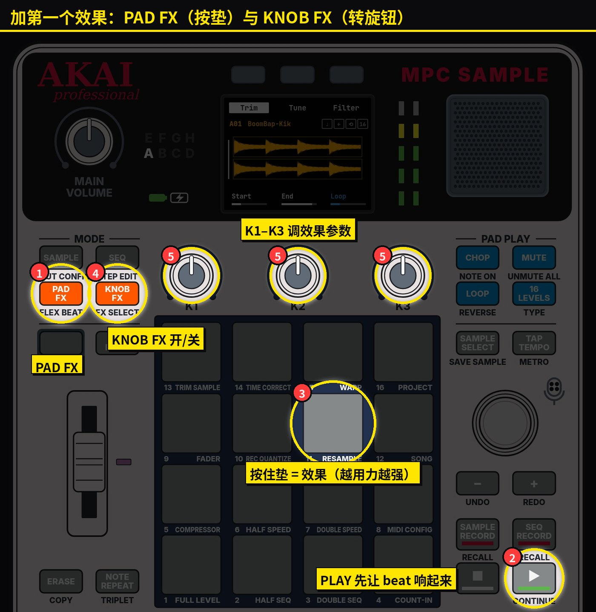
- PAD FX：PAD FX → PLAY → 按住不同的垫（PAD 10 = LoFi，PAD 15 = Delay，PAD 16 = Reverb），压得越重越明显，松开就停。B1（Latch）锁住效果。这时垫是效果键、敲不出鼓声，按 SAMPLE 回去。
- KNOB FX：KNOB FX（键亮 = 开）→ SEQ → PLAY → 转 K1–K3。换效果：SHIFT + KNOB FX → 转 / 按 ENCODER；敲垫选受影响的垫，B2 = 全部垫，B3 = 旁通。KNOB FX 开着时 K1–K3 只管效果，用完再按一次关掉。
保存工程
自动保存只有「当前这一份」。Save Project 另存一个有名字的存档，从 Load Project → User 打开，不怕被新建工程清掉。注意：SHIFT + PAD 11（RESAMPLE）不是保存。
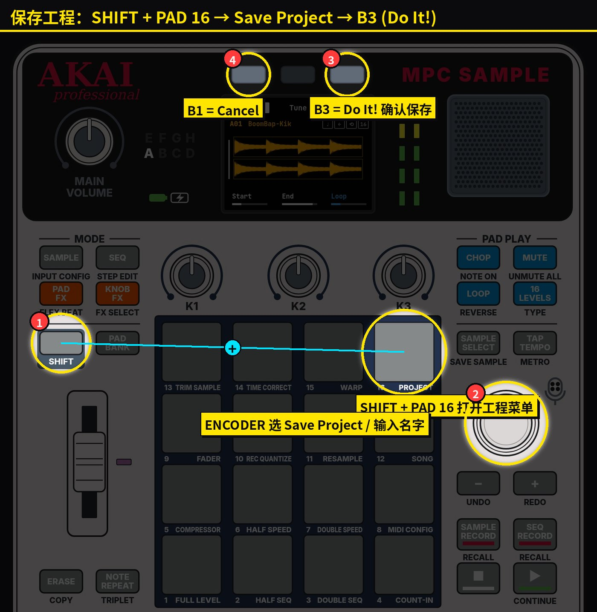
- SHIFT + PAD 16 打开 Project 菜单。
- 转 ENCODER 选 Save Project，按下确认。
- 起名：转 ENCODER 选字符，按下确认并跳下一个；− + 移动；B2 删字符；按住 SHIFT 输大写。
- B3（Do It!）保存；不存了按 B1（Cancel）。
选成 New Project 会清空当前工程——新建前先保存！保存后在 Load Project → User 里；回到出厂 demo：Load Project → Demos。
5章末
常见问题 FAQ
完全没有声音？
① MAIN VOLUME 太小；② 后面插着耳机或音箱线；③ 在 SEQ / PAD FX 模式，按 SAMPLE；④ 垫被静音（MUTE 模式下红 = 静音，SHIFT + MUTE 全部取消）；⑤ 用内置麦克风录音时喇叭会静音。
旋钮 / 推子转了没反应？
旋钮：朝参数名旁的箭头方向转，到箭头消失。推子：推到旁边 LED 亮度开始变化。KNOB FX 开着时 K1–K3 只管效果。
按错了怎么办？
SHIFT + − = 撤销，SHIFT + + = 重做。注意：切片（Chop）编辑不能撤销。
声音停不下来？
快速按两下 STOP。循环采样（LOOP）再敲一次那个垫就停。
按了 HALF SPEED / DOUBLE SPEED，BPM 怎么没变？
它们改的是音符间距（1/8 变 1/4 或 1/16），不改 BPM。改速度见「第一次上手 · 录第一段 beat」。
开了预备拍却听不到“1、2、3、4”？
节拍器要设成 On 或 Record（SHIFT + TAP TEMPO）。节拍器音量：SEQ 页按住 SHIFT 转 K3。
16 LEVELS 按了没反应？
它（把一个声音铺满 16 个垫，按力度 / 滤波 / 音高逐级变）只在 SAMPLE 模式可用。SHIFT + 16 LEVELS 选类型；Tune 类型的原始音高在 PAD 4。
按键的灯是什么意思？
亮 = 正在用，暗亮 = 可用，灭 = 现在不能用。按住 SHIFT 时有第二功能的键亮红。
屏幕上的小箭头 ⇧ 是什么？
按住 SHIFT 时 K1–K3 或 B1–B3 还有另一组功能（1.4）。
开着机充不进电？
可能只在关机时充电。用附带的线 + 至少 5V 2A 电源。
为什么找不到 Program / Track？
那是大型 MPC 的概念，MPC Sample 没有。一个工程 = 8 组 × 16 垫 + 最多 128 个序列。
microSD 卡插在哪？怎么和电脑互传？
卡槽在机身左侧。接电脑后 SHIFT + PAD 16 → SD Card Access；传完先在电脑上“弹出”，再按 B1 退出。
自查清单
全部能做到，你已经能独立做出第一段 beat 了：
- 开机、调音量、播放和停止 demo（1.7）
- 说出 5 个区各管什么（1.3）
- 指出 Sample 页和 Seq 页上的 BPM、序列名、K1–K3 参数在哪（1.4）
- 用 SHIFT 打开工程菜单再退出（1.5）
- 找到 PAD 1 和 PAD 16，切到 Bank C（1.6）
- 把一个垫换成别的军鼓（1.8）
- 在 SEQ 模式下让序列 1 播完后切到序列 2（1.9）
- 设 BPM、开录音量化和节拍器，录 2 小节 beat，并撤销一次（1.10）
- 用内置麦克风录一个声音并修剪干净（1.11）
- 用 PAD FX 和 KNOB FX 各加一次效果，并关掉 KNOB FX（1.12）
- 给工程起名保存，再从 Load Project → User 找到它（1.13）
资料
- User Guide v1.3.0 PDF（本章按键组合、屏幕截图均出自此版手册）
- 在线用户指南 · Tutorial 章
- 产品页 · Academy 视频
- Akai Professional YouTube 频道
- 官方 FAQ
- 下载 · 固件
本章速查：所有按键、编号 1–40、各模式全部参数 → 第一章附录 · 功能速查。
图片说明：本章面板图是依据官方手册顶面示意图、用代码绘制的示意插画（不是实物照片）；「实时机器」一节的屏幕截图来自 Akai Professional《MPC Sample User Guide v1.3.0》。